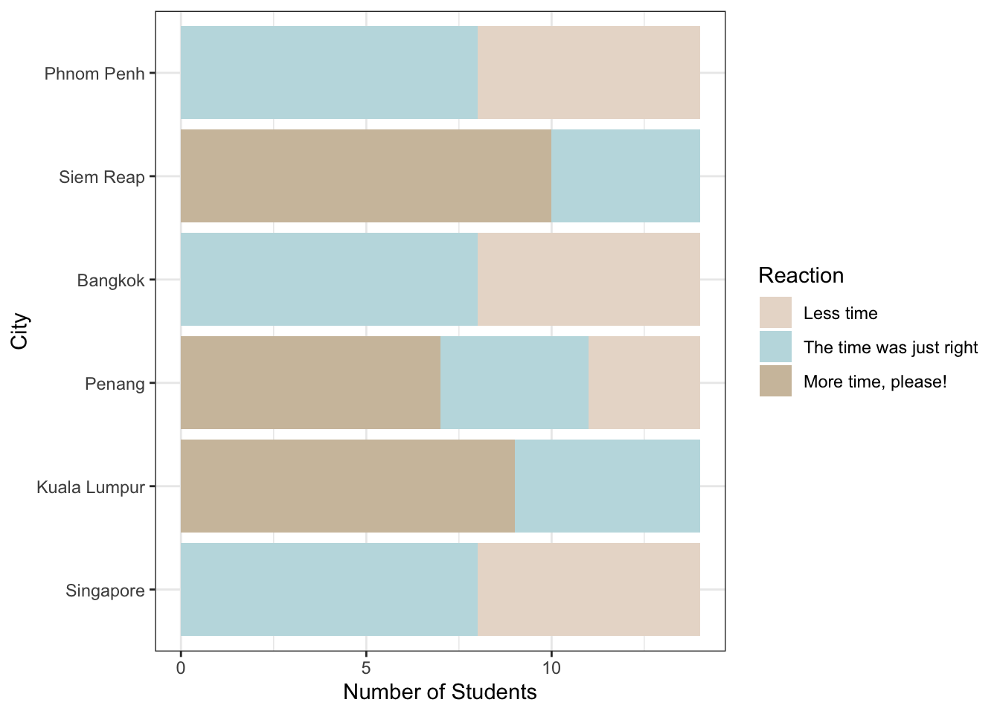
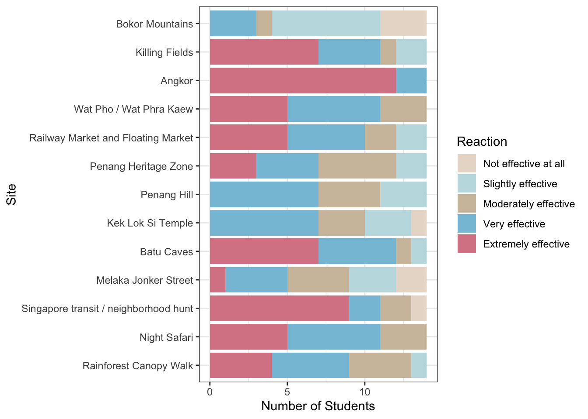
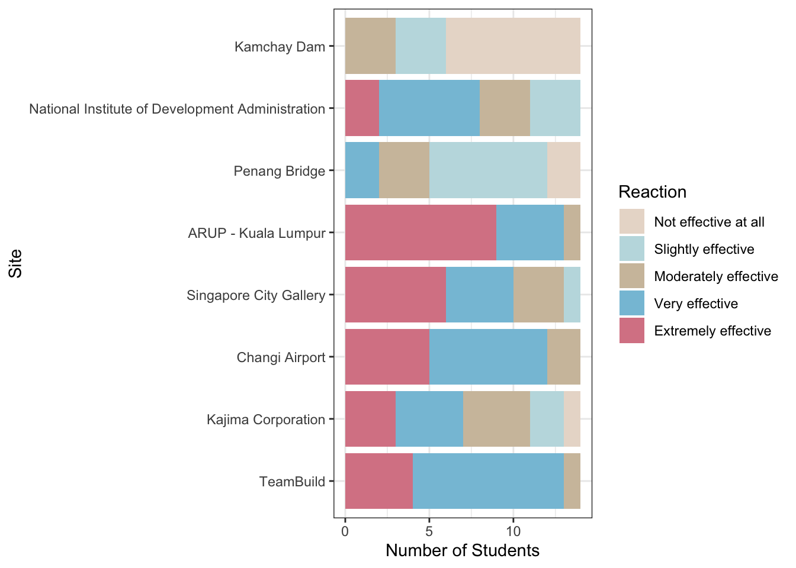
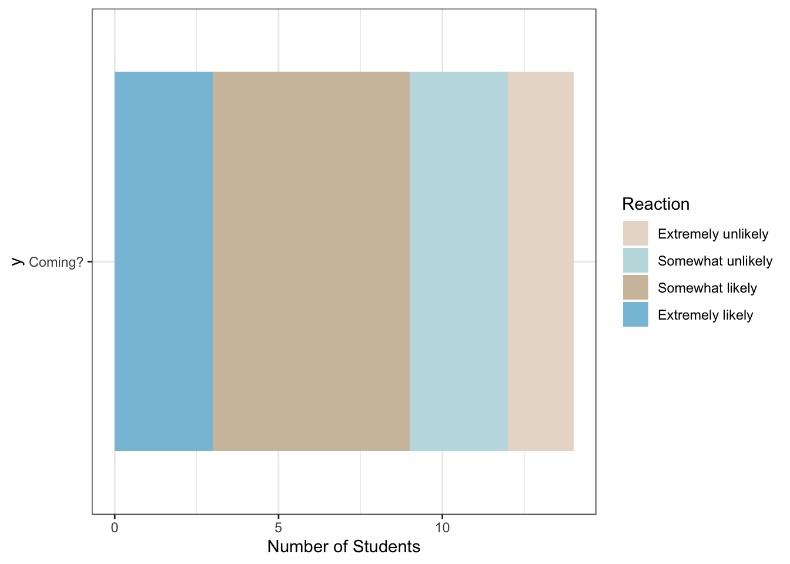

Overview
In May and June 2024 I worked with James Smith in my department to lead a sophomore-level study abroad to Southeast Asia. We visited the following cities across a 21-day trip:
- Phnom Penh, Cambodia
- Siem Reap, Cambodia
- Bangkok, Thailand
- Penang, Malaysia
- Kuala Lumpur, Malaysia
- Singapore
The curriculum for the program was CCE 201 Sustainable Infrastructure (taught by me) and CCE 231 Global Leadership (taught by James).
This blog post reflects on the trip, making use of a post-return survey completed by the students on the program. It contains notes of what I think went well, what didn’t work out so well, and what I might want to do differently next time, supported by data from the survey. 20 students completed the trip, but only 16 completed the anonymous survey.

Overall Trip
It was a very fast trip, with our longest stays being only 4 nights (Bangkok) or 5 nights (Singapore). Siem Reap, Penang, and Kuala Lumpur were only 2 nights each. When we asked the students if they wanted more or less time in a place, their answers largely reflected that they wanted more time in the short stops.
It would be difficult to keep the same trip length while adding time to any of the cities. Perhaps a day could be taken from Bangkok or Singapore, but the real answer is probably to either skip Phnom Penh or make it a 25-day trip.
Notes for next time.
We were helped greatly on the trip by Praveen Beesa and Melissa Tours, who booked our buses, guides, and lodging. It would be good to ensure that we get an itemized detail of everything they are covering, because there were a few places where we believed admissions were covered by Melissa and they were not. It is also good to independently check whether the hotels have breakfast; we were informed that the hotel in Singapore would provide breakfast, but they didn’t even have it available.
We should probably do a better job of communicating with the tour organizer about our expectations for guides and group lunches. We are, after all, not like the typical retirees or holiday tourists they are used to. Our best guides — Nee in Bangkok and Sum in Siem Reap — understood that we were up for something a little different, more self-guided and exploratory. We also probably don’t want to roll up to a restaurant very often, unless it is a group meal that we have explicitly planned on. Food courts are more our style, I think.
Remind students that American Express and Discover have much smaller international networks, and that a Visa or MasterCard is the only reliable credit card. One of our students was kind of caught out by this.
Cultural Visits
By my count, we visted 13 cultural “sites” as a group. Most of the sites received positive reviews, with a strong positive response for Angkor and the Singapore scavenger hunt.

The reaction to Angkor is unsurprising, given that Angkor is among the most amazing places on the planet. Our use of mountain bikes there — and the support we received from Pheah and Sum and the bike guides — made an already magical experience truly once-in-a-lifetime. One student remarked to me that the day on bikes at Angkor Wat was the best day of his life to that point. Hopefully he can top it later, but he won’t do that everyday.

The appreciation for the Singapore scavenger hunt was gratifying; this was an idea that I cooked up on a visit to Singapore in Fall 2022. We divided the group into four teams and had them visit several sites in a pre-planned order (not known to the teams). When they reached each site, they would send me a selfie of themselves at the site and I would send them their next destination. The sites were:
- Sri Veeramakaliamman Hindu temple in Little India
- Sultan Mosque in Kampong Glam
- Merlion statue
- Temple of the Buddha’s Tooth in Chinatown
- St. Andrew’s Cathedral
At the end of the activity, we all met at Gardens by the Bay for a group satay dinner. This activity accomplished two main goals. First, it helped the students appreciate the syncretic society of Singapore. Second, it taught the students how to get between interesting places on public transit; it was very rewarding to listen to the students during the rest of our time in Singapore talk about how they revisited the neighborhoods they saw on the scavenger hunt for meals or souvenirs.


The Killing Fields were strongly affecting to the students, as you would expect them to be. It was probably tough to do these on the first day, but it’s hard to imagine when else you would do them in our schedule, and the students appreciated them.
Lower scores were logged for the Penang Hill and the Bokor Mountains. More on the Bokor Mountains when we talk about the technical sites below. Penang Hill was a mistake on my part; the best part of it is the rainforest preserve, which I forgot had a RM 60 ($15 USD) admission on top of the train. We paid for the funicular train to the top of the hill (which is a cool and nice place), but most students skipped the rainforest walk.
We went to church in both Bangkok and Singapore. These are probably the right places to go, as the Church is well-established with wards that won’t be overwhelmed (like the Penang branch might be). It was good to hear from Anan Richins, the first male Thai convert to the Church; it was even better perhaps to hear from Anurut, the engineer and project manager of the Bangkok Temple who joined the Church during the temple’s construction.
Notes for next time
The Killing Fields memorial and the Tuol Sleng prison both have excellent self-guided audio tours that allow you to pursue the violence and suffering of both sites at your own pace. Next time we should insist that we do not want a group guide at either site, but rather to use the audio guides.
If you go to Penang (and I think you should, see the desire for more time there above), make sure to pay for students to get into the nature preserve.
The Railway market was popular, but was very touristy. I wonder if we could instead provide instructions for people on how to get there. But maybe it’s fine.
Night Safari is a must. Remember that transit there is hard, and that the trains don’t run all night.
Maybe figure out how to go when the Bangkok Temple is open? It was closed for its annual cleaning when we were there.

Technical Sites
We also visited eight distinct technical sites, or sites where there was technical content.

The students’ best reviewed site was the ARUP office in Kuala Lumpur, where structural engineer Raymond Chen walked us through the structural design of Merdeka 118, the newly completed second-tallest building in the world. We talked about why KL has such tall buildings (4 of the world’s top 20), and what it is like to be an engineer or project manager on such a massive and high-profile project. I was personally blown away.


A unexpectedly great pair of sites were the Singapore City Gallery and TeamBuild. The first is an urban planning museum with cool interactive displays and large-scale 3D models of Singapore’s urban spaces and a strong theme of sustainable growth and energy use. The second is a firm that builds pre-fabricated concrete rooms for use in Singapore’s Housing Development Board (HDB) public housing projects. I say unexpected because I planned for the City Gallery visit and James arranged the TeamBuild visit, but the second site really helped the students see how the stated goals of Singapore are operationalized through engineering and construction.

Notes for next time
Dams on the Mekong in Cambodia are a critical sustainability issue with lots of interesting elements, but none of them are particularly close to Phnom Penh or Siem Reap; it’s also not clear which ones we could even get close to if we tried. Need to think through this harder, but Kamchay isn’t likely to be a good place for us.
Can we find someone to talk to us about the Penang Bridge?
Next Time?
I would really love to do this trip as a residential program, where we stay in Singapore for 8 or 9 weeks, with potentially a 1-week trip to KL and Penang, and a weekend trip to Bangkok and Angkor. More than half the students indicated that they still would have likely come. Those who said they would not suggested in a follow-up question that family obligations or summer jobs would be the primary obstacle.

Doing a longer progam would be much less frantic for the directors, who could teach the classes locally on a more normal schedule, and would not have to fully commit to the three week program. But it would cause additional hurdles, and some students would not come. Of course, others might be more attracted